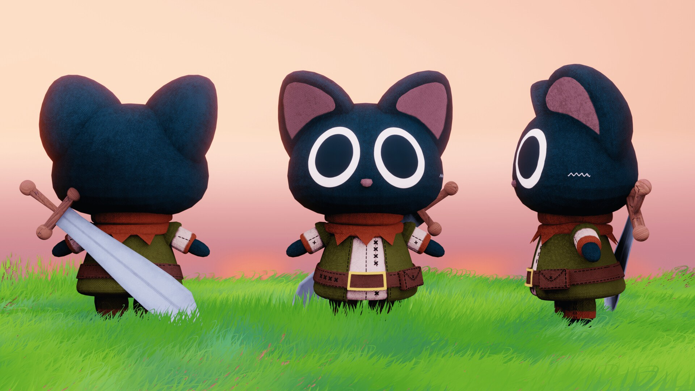
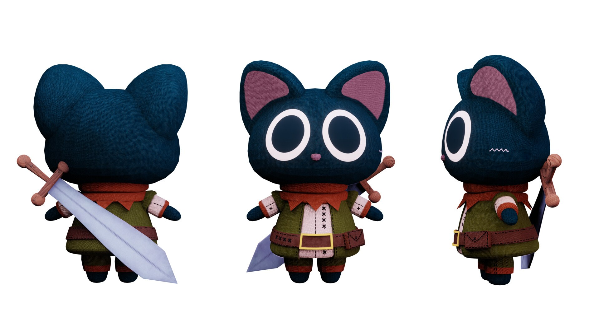

3D Kitty Toy Model
A plush-style character taken from modeling to final render.
- Inspired by
- SouthernShotty's tutorials
- Role
- Modeling, texturing and rendering
- Tools
- Blender, Substance Painter, Unreal Engine
- Year
- 2026

Overview
My rendition of a toy cat, inspired by the tutorials from SouthernShotty. I modeled it in Blender, textured it in Substance Painter and rendered it in Unreal Engine.
The character has a plush look, with woven fabric, stitched seams, a small belt and a sword on its back. I especially enjoyed the detail work in Substance Painter, and it was a good exercise in taking a small stylized prop through the whole pipeline, from modeling to the final render.
What I did
- Modeled the character and its outfit in Blender: body, tunic, scarf, belt and sword.
- Textured everything in Substance Painter, with a woven fabric look, stitching details and separate materials for leather, wood and metal.
- Rendered the character in Unreal Engine, both in a sunset grass scene and in a clean front, side and back turnaround.
- Used the tutorials as a foundation and built my own version of the design and its details.
Gallery
